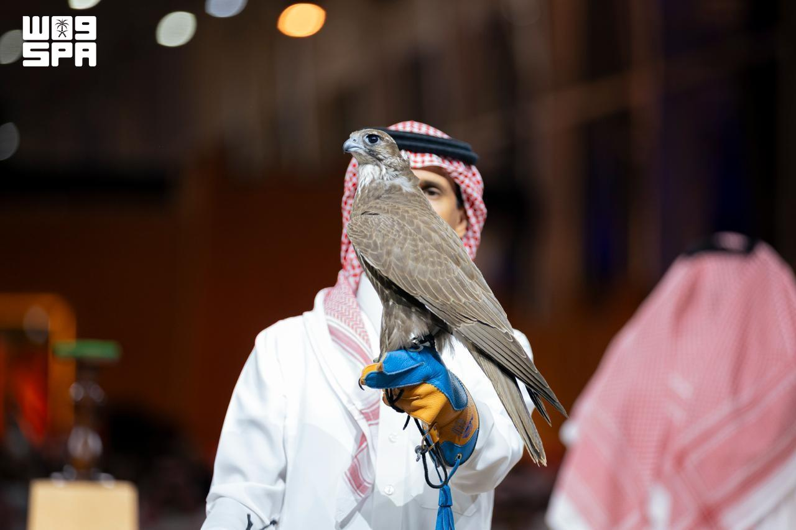
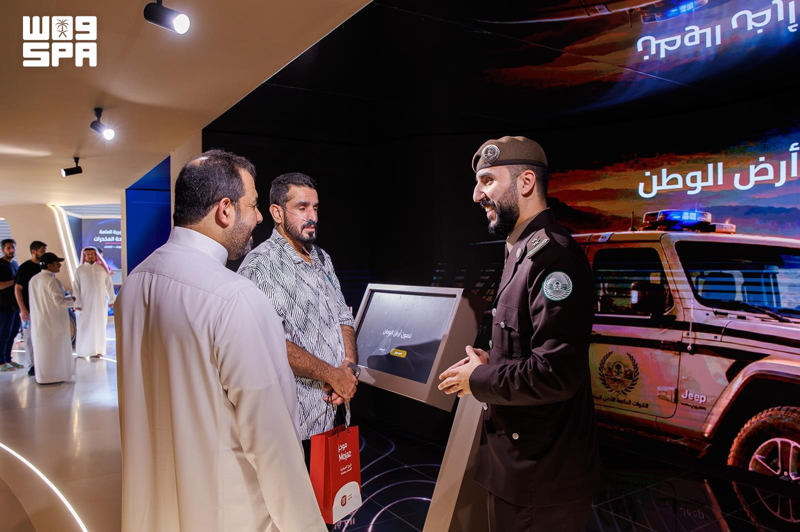
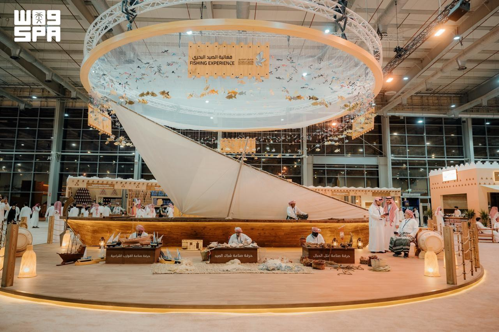

The International Saudi Falcons and Hunting Exhibition 2026 in Malham, north of Riyadh, brings together falconry, competitions, auctions, hunting and shooting equipment and modern technologies. This year’s programme goes beyond a conventional exhibition to offer a broad view of hunting, falconry and related activities.
Running from 1 to 10 October, the exhibition has seen several noteworthy developments in recent days, led by the start of Al-Melwah racing, Mongolian falcon auctions and the presentation of AI-enhanced technologies for monitoring, tracking and protection.
Al-Melwah: 12 Heats and SAR 723,000 in Prizes
Al-Melwah racing has begun at the exhibition, with falcons competing to cover 200 metres in the fastest possible time.
This year’s edition comprises 12 heats divided between owners and amateurs, and elite and professional competitors. It includes six categories of young falcons: saker, peregrine, pure gyrfalcon, muthallath pure gyrfalcon, gyr-taba and gyr-peregrine.
Total prize money reaches SAR 723,000. Participation is restricted to young falcons purchased at the International Falcon Breeders Auction, directly linking the competition to falcon breeding and production.
Mongolian Falcons Attract Substantial Bids

Elsewhere at the exhibition, Mongolian falcons have attracted falconers and buyers to their dedicated auction.
One auction night saw two falcons sell for a combined SAR 550,000: a young saker for SAR 150,000 and an adult saker for SAR 400,000.
On another night, two young saker falcons sold for a total of SAR 350,000, one fetching SAR 250,000 and the other SAR 100,000.
Mongolian saker falcons command particular interest among falconers for their size, endurance, long wings and varied plumage, characteristics that contribute to their value in the falcon market.
Artificial Intelligence Enters Monitoring and Protection

The developments at the exhibition extend beyond falcons and competitions.
The Ministry of Interior pavilion presents digital solutions and AI-enhanced technologies used in monitoring, tracking and response, alongside technologies associated with environmental protection and the sustainability of marine resources.
The pavilion also introduces visitors to regulations governing the possession and carrying of hunting firearms, as well as rules relating to sea fishing.
This technological presence reflects a growing shift in the relationship between hunting and wildlife management, as monitoring, data analysis and tracking become an increasing part of protection and regulation.
More Than 5,000 Products

The exhibition also features a substantial area dedicated to firearms, ammunition and hunting and shooting equipment, displaying more than 5,000 products representing over 181 international brands.
Exhibits include firearms and accessories, optics, equipment and products associated with hunting and outdoor travel.
Sea fishing also features in the 2026 programme, with traditional tools and crafts relating to boats, nets and rope-making. This broadens the exhibition to encompass hunting on land and fishing at sea, alongside falconry and shooting.
Between Al-Melwah races, auctions recording prices of hundreds of thousands of riyals and the expansion of equipment and modern technologies, the International Saudi Falcons and Hunting Exhibition 2026 offers a comprehensive picture of a sector combining heritage, industry, trade and technology.